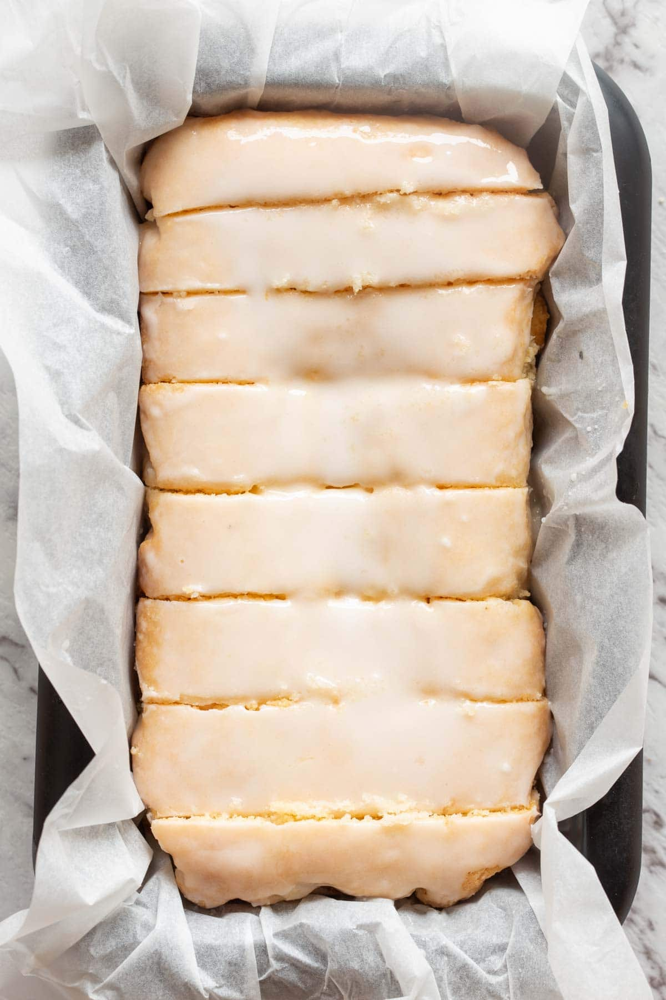

Vegan Lemon Loaf

Perfect for afternoon tea or as a light dessert. For an extra citrus punch, try adding lemon extract to the glaze!
This recipe and photo are property of The Big Man's World and have been republished here for educational purposes only. Be sure to check out Arman's website for more great recipes!
Ingredients
Self-Rising Flour
- 4 cups all-purpose flour
- 2 teaspoons salt
- 2 tablespoon baking powder
Lemon Loaf
- 2 1/4 cups self-rising flour
- 1 cup superfine sugar \(caster sugar\)
- 1 teaspoon baking powder
- 2/3 cup water
- 6 1/2 tablespoons oil
- 1 lemon, juiced and zested
- 3/4 cup powdered sugar
Directions
- Preheat the oven to 200C/400F. Line a loaf pan with parchment paper and set aside.
- Prepare self-rising flour by combining three ingredients listed above.
- In a mixing bowl, add the self-rising flour, baking powder and superfine sugar/caster sugar, and mix well. Add your lemon zest, water, oil and lemon juice, and mix well, until a smooth batter remains.
- Transfer the batter to the lined loaf pan and bake for 40 minutes or until a skewer comes out clean.
- Remove from the oven and let cool in the pan for 10 minutes, before transferring to a wire rack to cool completely. Once cooled, glaze the loaf and slice.
- To make the glaze, combine your powdered sugar with either 1-2 tablespoons of lemon juice, milk or water, until desired texture remains.